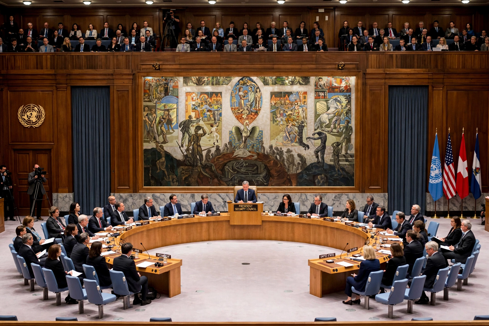

United Nations Security Council
From Wikipedia, the free encyclopedia

The Security Council chamber at UN Headquarters in New York.
The United Nations Security Council is one of the six principal organs of the United Nations, charged with maintaining international peace and security. It has 15 members: five permanent members (China, France, Russia, the United Kingdom and the United States) and ten non-permanent members elected by the General Assembly for two-year terms. It is the only UN body whose decisions — under Chapter VII of the UN Charter — are legally binding on all member states.
Powers and the veto
The Council may investigate disputes, recommend settlements, impose economic sanctions, authorise arms embargoes and peacekeeping operations, and authorise the use of military force (as in Korea 1950 and the 1991 Gulf War coalition; the 2003 Iraq invasion lacked such authorisation and remains contested). Substantive decisions require nine votes including the concurring votes of the permanent members — the "veto", cast hundreds of times during the Cold War (mostly by the USSR and the US) and again frequently in recent years over Syria, Ukraine and Gaza, fuelling long-standing reform campaigns by the G4 (Brazil, Germany, India, Japan), the African Union and others seeking expanded membership and veto restraint.
Practice
Much Council work occurs in informal consultations; outcomes include resolutions, presidential statements and sanctions committees monitoring regimes against individuals, armed groups and states. Deadlock in the Council shifts initiative to the General Assembly (under the "Uniting for Peace" procedure) and to regional bodies.
See also
United Nations · United Nations General Assembly · Veto · International law